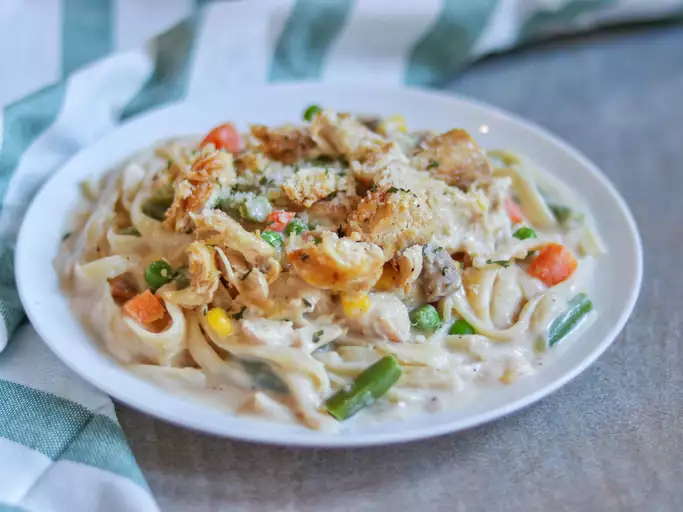

easy alfredo chicken

easy, quick and finally a remotely edible recipe for my gymbros
i meannnnnnnnn shit has like 50 grams of protien fam, badass recipe for your post workout meals.
akshually, french cuisine has 5 kinds of sauces, 4 are cold and 1 is hot. alfredo is a derivative of white sauce, which is made by adding mushrooms and cheese to the white sauce
ingredients
- one pound uncooked fettucine or liguine
- 2 boneless chicken breast halves, boneless and cubed
- 1 jar (16 ounce) alfredo pasta sauce
- 10 ounce mixed veggies
- 1 can (4.5 ounce) sliced mushrooms
- 1/3 cup milk
directions
- Fill a large pot with lightly salted water and bring to a rolling boil. Cook fettuccine at a boil until tender yet firm to the bite, about 8 minutes. drain well
- While the pasta is cooking, place cubed cooked chicken, Alfredo sauce, frozen vegetables, mushrooms, and milk in a large saucepan over medium-low heat. Cook and stir until chicken is heated through and vegetables are tender.
- Serve warm Alfredo and chicken sauce over cooked noodles.